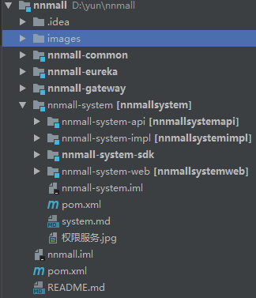

-
- Basic info. 基本信息
- 个人信息: 李云龙 / 男
- 工作年限: 三年
- 学历: 大专
- 常用ID: yunlongn
- 博客: www.ityouknow.cn
- GitHub: www.github.com/yunlongn
-
- Project. 项目
-
小爱社区服务系统
项目原本采用 SpringBoot 框架，在我加入公司之后进行了升级改造 基于SpringCloud改造开发
项目技术栈有： SpringMVC、Spring、Mybatis-plus、LCN 、Eureka、Feign 、Rebbon、Hystrix 、Gateway、Jenkins自动部署
权限管理是基于RBAC模型，实现的权限管理系统。
背景：为几个社区，不同的物业公司之下的居民用户提供便捷的社区服务
负责的模块有：
1、计算不同物业下面的每户居民物业费用统计
用到的技术栈有：RocketMQ、Mongdb、XXL-JOB
2、用户的微信登录注册信息绑定。使用了微信api
3、居民的头像上传裁剪。 用到技术有阿里云OSS
4、居民的报修上传与后台管理
-
驾校管理系统
基于SpringBoot开发。
项目技术栈有： SpringMVC、Spring、Mybatis-plus、Jenkins自动部署
背景：为某个驾校提供线上报名系统 、 线上预约系统。 后台观察学员动态、考学进度、减少驾校纸质化操作
负责的模块有：
1、用户的在线报名信息收集与微信支付缴费
2、用户学车情况管理、缴费情况。
3、学员身份证信息上传与裁剪。信息自动填入。 技术点：阿里云OSS、OCR身份证识别
4、用户预约报名。 预约一周内的教练学车。技术点：redis存储
-
小爱学生奶
基于SpringBoot开发。
项目技术栈有： SpringMVC、Spring、Mybatis-plus、Jenkins自动部署
背景：项目为督促小学生喝牛奶、与自动售货机交互、 采用云帐号、空中充值卡余额。 关注学生每日喝奶情况。 多牛奶商家入驻
负责的模块有：
1、学生卡 扫二维码 + 密码绑定 、 卡充值
2、统计学生刷卡情况。生成每日报表。redis、XXL-JOB(将每日报表放入redis)
3、与售货机进行通讯 刷卡请求接口是否出货 ActiveMq、 签名防篡改
4、小程序首页的牛奶促销售卖 微信支付
个人项目
-
SpringCloud-微服务商城（逐渐完善） 源代码
基于SpringBoot开发。
项目技术栈有： SpringMVC、Spring、Mybatis-plus、Jenkins自动部署
思路：
1、拆分模块会员、SSO、订单、商品、支付、消息、微信、后台系统、任务调度 （将系统模块化拆分）
2、将微信支付封装成服务，提供给内部其他子系统进行调用， 为了保证支付接口的安全性， 使用令牌+验签+加密防止数据被篡改
3、配合使用 Eureka、Feign 、Rebbon、Hystrix 、 Mybatis-plus、Gateway 、XXLJOB、Jenkins
已完成模块：
1、Oauth2.0 实现登录
2、自定义注解 + Rbac模式完成管理员模块
.....
 -
RBAC权限管理系统
1、使用Redis缓存制缓存session对象。
2、项目中使用SpringMVC中的拦截器的方式拦截所有请求。判断登录用户的权限进行权限拦截
3、使用mongodb 做日志的存放。

-
微信商城小程序开发
在大学期间给别人做的一个小商城
小程序做到了以下功能（搜索兰茜玲护肤即可找到该小程序）
1、商品页面：完善详尽的商品展示页面，可以让消费者迅速找到自己心仪的商品。
2、微信对接：小程序使用oauth2登录后台程序，对应登录角色
3、搜索：通过搜索，快速发现自己想要的。
4、购物车：在下单之后，通过购物车对商品进行再次的筛选。
5、在线支付：支持微信支付。方便快捷。
6、转发分享：对商品的资讯、产品等可以进行转发、分享等。
7、微信支付：查阅了许多资料，完善了支付功能，可以直接在小程序上进行支付
8、评论互动：收到商品后，大家可以对商品进行评论。
9、在线客服：用户可以与商家客服进行详细沟通。
10、前后端使用json进行数据传输
-
- Experience. 经验
河源市河源通智能卡有限公司（2018.07 - 2019.05）
河源太学生文化科技开发有限公司（2017.12 - 2018.06）
-
- Skill. 技能清单
前端
-
HTML / CSS
能够编写语义化的 HTML，模块化的 CSS，完成较复杂的布局
熟悉 Less Sass 等CSS预处理和模块化工具
-
JavaScript
了解原生 Javascript
-
Vue.js
了解Vue生命周期、 双向绑定原理
能使用一些基本的Vue框架搭建后台管理系统。 例如 D2admin、 Vue-admin-element
后端
-
Java
1.熟练掌握JavaSE基础知识、看过HashMap、ArrayList源码。了解底层实现原理
2.熟练掌握Eclipse、svn、git、Maven、docker等开发及版本控制工具，熟练掌握Java基础技术Jsp、Servlet、Jdbc，熟练掌握Web应用系统开发，具备的独立开发能力；
3.熟悉使用MySQL、Redis、MongoDb数据库；
4.熟练运用Spring、Mybatis、Springboot等开源框架，熟悉Spring的IOC、DI、AOP设计思想；
5.熟练使用网络通讯协议，熟练使用json、xml通讯格式，熟悉常见消息中间件ActiveMQ、RocketMQ使用；
6.熟悉restfull API开发规范，熟悉三方授权OAuth协议、对接支付接口，熟悉微信开发；
实验
-
自己做过的一些实验
1.熟练掌握JavaSE基础知识、看过HashMap、ArrayList源码。了解底层实现原理
2.熟练掌握Eclipse、svn、git、Maven、docker等开发及版本控制工具，熟练掌握Java基础技术Jsp、Servlet、Jdbc，熟练掌握Web应用系统开发，具备的独立开发能力；
3.熟悉使用MySQL、Redis、MongoDb数据库；
4.熟练运用Spring、Mybatis、SpringBoot等开源框架，熟悉Spring的IOC、AOP设计思想；
5.熟练使用网络通讯协议，熟练使用json、xml通讯格式，熟悉常见消息中间件ActiveMQ、RocketMQ使用；
6.熟悉RestFull API开发规范，熟悉三方授权OAuth协议、对接支付接口，熟悉微信开发；
其他属性
-
爱猫、美剧、旅游爱好者
轻微强迫症，注重 阿里巴巴Java开发手册
毕业于
-
河源职业技术学院
看过的书籍
- 1、Head First Java（第二版）
- 2、Head First设计模式
- 3、像计算机科学家一样思考 Java
- 4、高性能 MySQL（第 3 版）
- 5、Spring Boot 揭秘
- 6、数据库索引设计与优化
- 7、阿里巴巴Java开发手册
- 8、疯狂Java讲义（第4版）
- 9、MySQL 性能调优与架构设计
感谢您花时间阅读我的简历，期待能有机会和您共事

李云龙的简历
System.out.print("hello word")
-
- Contact. 联系方式:
- 电话: 13539136450
- 邮箱: 763506525@qq.com
- QQ: 763506525
-
- Application. 应聘岗位
- Java 后端工程师
有比较强的动手能力，有很好的分析问题与解决问题的能力；
具有很强的团队精神和良好的合作意识！